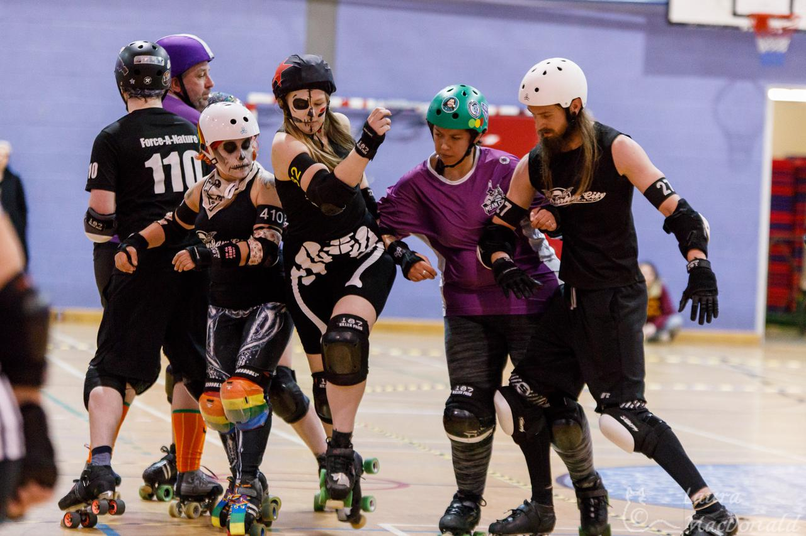
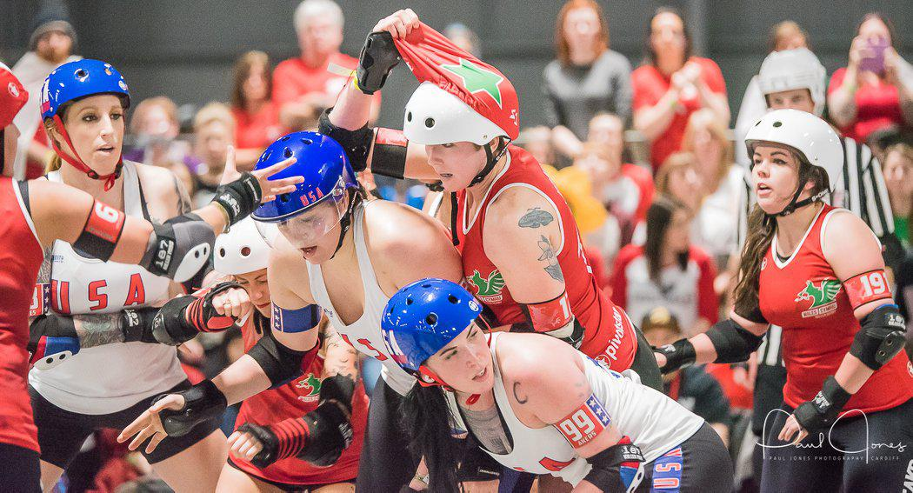
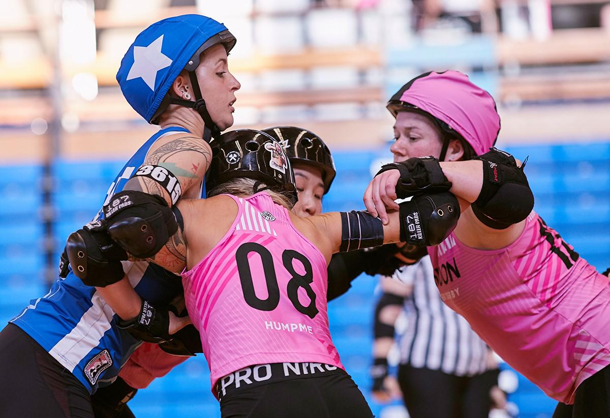
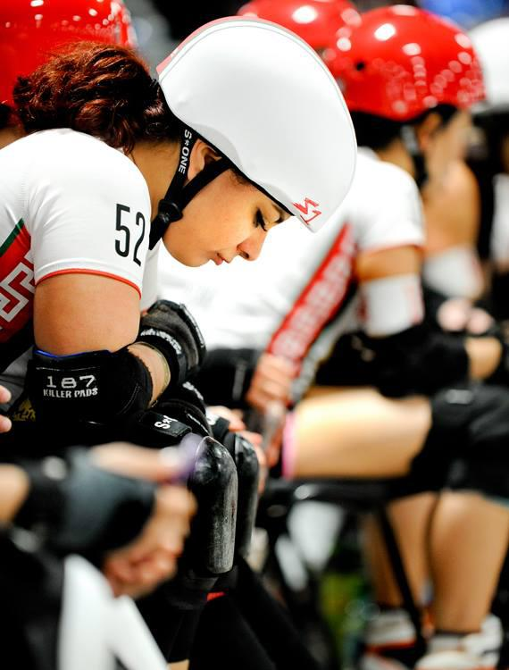
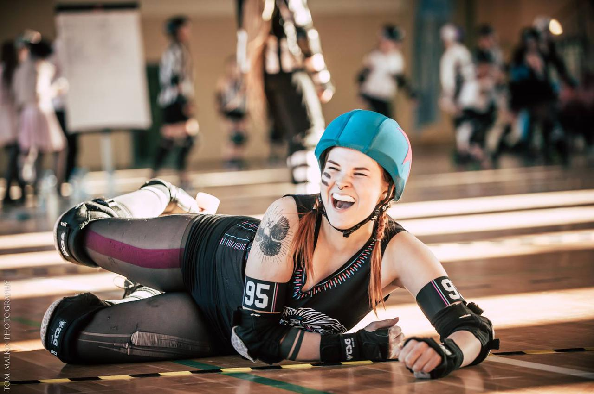
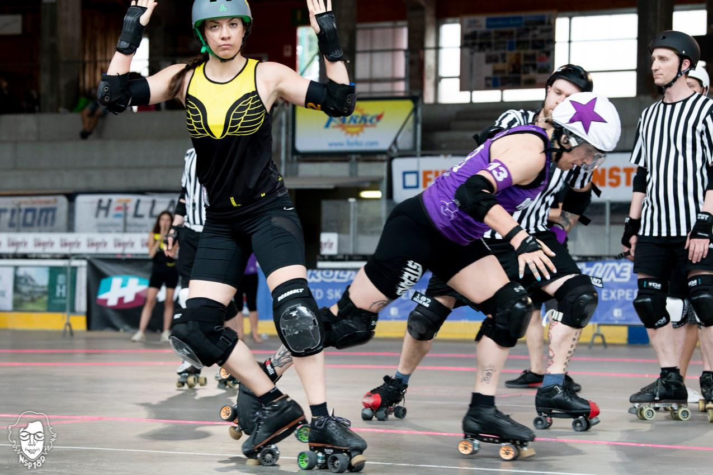

The First SRDB Awards - Photographer

This is the nominations list for the first ever SRDB Awards, in the category of Photographer.
The ground-rules for the Awards are covered in the launch post here .
The hub for all links to categories is here .
As mentioned in that link, voting is by approval voting. This means that you can, and should, tick boxes for all of the nominees you think would deserve to win. You can tick all the boxes, if you think they're all deserving; you can tick no boxes if you think none are deserving.
Everyone gets a single submission (with as many boxes ticked as they want); we have enabled detection of multiple submissions on this form, and will also be taking action against unusual voting patterns which get past this.
We asked for photographer nominations to include a link to a photograph, or a portfolio. Several of these nominations did not do so, so we've picked photos (and added portfolio links) where missing. All photographs are, of course, the property of the relevant photographer.
Nominees for PHOTOGRAPHER
Nominee: Laura MacDonald
PORTFOLIO EXAMPLES 1 PORTFOLIO EXAMPLES 2
"Laura is not only super committed to the sport but also gives her best going above and beyond to photograph local and national games and tournaments. Despite not having her own transport she attends a huge amount of games, training and tournaments to take photos. She documents so many aspects; on skates officials, off skates officials, skaters, gameplay, volunteers, staff, crowd, stalls and so many special moments that our community will look back on for a long time to come! Laura photographed some big milestones in Scottish roller derby including Scotland's first open to the public MRDA game, Scotland's first MRDA tournament and Scotland's first time hosting the MRDA European Qualifiers. She also worked with the Men's Power of Scotland team for the 2016 and 2018 world cups and has continued to contribute to the 2020 squad. In addition to these accolades, Laura contributes to almost (if not every!) league in Scotland to photograph their events. "
Nominee: Paul Jones
"This photographer takes amazing pics, as does many other photographers. But his commitment to support all of the leagues in South Wales is unrivalled. He travelled across Europe to support them, and spends most of his evenings at one scrim or another. He is a central part of the South Wales roller derby community, supporting at least 6 leagues. "
Nominee: Roller Derby on Film (Jason Ruffell)
"It's been great seeing Jason at more events these last few months, his photos are still the highest quality. He really knows how to capture the spirit of the game, he's great at shots of often overlooked aspects of a derby event, and he's also great to work with! "
Nominee: Shirlaine Forrest (Manchester Roller Derby)
"A tremendously talented individual who deserves a lot of recognition."
Nominee: Tom Malko
"Starting locally from photo project to school, through Polish games and tournaments, to the World Cups, he always finds our best sides. His photos always reflect the vivid emotions accompanying the roller derby, thanks to which over half of the skaters (and not only) have his photos as their profile on fb."
Nominee: Vinciane Piérart (NSP 189)
"I discovered her at SKIR tournament this year and fell in love with her work. To be honest, I may be biased on this one because that was our first SKIR as a team and her photos hold so many beautiful memories. But I think photography is (also) a way to make moments last forever and she surely did that for us (and countless other people), so that's that."
You can vote for your preferred winners out of the nominees here: [LINK]